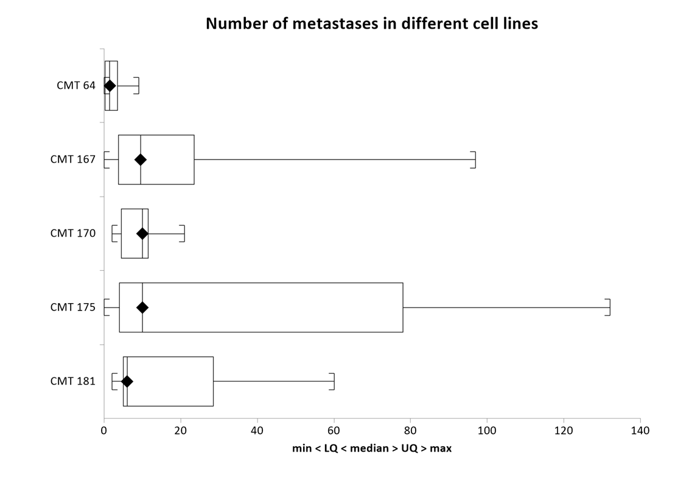

Box and Whisker Plot
Menu location: Graphics_Box and Whisker.
Box and Whisker plots, described by Tukey (1977), give a pictorial representation of nonparametric descriptive statistics.
In nonparametric terms, the central "box" represents the distance between the first and third quartiles (or the Tukey hinges when selected) with the median between them marked with a diamond, with the minimum as the origin of the leading "whisker" and with the maximum as the limit of the trailing "whisker".
The default Median, quartiles and range uses the conventional definition in descriptive statistics (StatsDirect centile type 2): with the data sorted into ascending order, the lower quartile is the (n+1)/4th value and the upper quartile the 3(n+1)/4th value, interpolating between neighbouring values. In R these are quantile(x, c(0.25, 0.5, 0.75), type = 6). This default is unchanged.
Choose Tukey hinges (median of each half) for the definition used by R's standard boxplot() and fivenum(). Split the ordered values into lower and upper halves, including the overall median in both halves when the sample size is odd; the medians of those halves are the hinges. Hinges can differ from the interpolated quartiles, especially in small samples. For example, values 1 to 5 give interpolated quartiles 1.5 and 4.5, but Tukey hinges 2 and 4. This choice is StatsDirect's seventh box-plot method; it is not R's quantile(type = 7).
The inner and outer fences use 1.5 and 3 times the distance between the selected quartiles or hinges. With only the outer fence selected, whiskers extend to the last observations within 3 times that distance; with neither fence selected, they extend to the minimum and maximum. The optional mean marker is available with either nonparametric definition.
This convention can also be extended to parametric representation of data using the arithmetic mean bounded by one standard deviation or by its confidence interval. StatsDirect enables you to choose one of these two parametric schemes or the nonparametric scheme for each plot. See descriptive statistics for the formulae used.
This is a useful way to present data to an audience; it is often easier to convey the central location and spread of values pictorially than by quoting a list of descriptive statistics.
If you tick the fence options (both are ticked by default) then each whisker stops at the last data point inside the fence and any data points beyond it are plotted as circles: hollow for points beyond the inner fence and filled for points beyond the outer fence. This form of box and whisker plot is often used to represent outliers. For the nonparametric plots, the inner fences are the lower and upper quartiles or hinges minus and plus 1.5 times their difference, and the outer fences 3 times that difference. For the parametric plots, the inner fences are the mean minus and plus 1.96 standard deviations, and the outer fences 2.58 standard deviations.

Example
Test workbook (Nonparametric worksheet: CMT 64, CMT 167, CMT 170, CMT 175, CMT 181).
The plot above shows the numbers of lung metastases found in mice inoculated with five cell lines of increasing metastatic potential (Cuzick, 1985), the data of the Cuzick trend test example.
To draw it in StatsDirect open the test workbook using the file open function of the file menu. Then select Box and Whisker from the Graphics menu and select the five columns marked "CMT 64" to "CMT 181" when prompted for data. The chart options are then shown: the type of plot is "Median, quartiles and range" and both fence options are ticked by default. The plot above was drawn with the two fence options unticked and with the chart title changed.
For this example, with the data of each column sorted into ascending order:
CMT 64: n = 8, min = 0, LQ = 0.25, median = 1.5, UQ = 3.5, max = 9
CMT 167: n = 10, min = 0, LQ = 3.75, median = 9.5, UQ = 23.5, max = 97
CMT 170: n = 9, min = 2, LQ = 4.5, median = 10, UQ = 11.5, max = 21
CMT 175: n = 9, min = 0, LQ = 4, median = 10, UQ = 78, max = 132
CMT 181: n = 9, min = 2, LQ = 5, median = 6, UQ = 28.5, max = 60
Each box runs from LQ to UQ with the median marked by a diamond, and with the fences unticked, as above, the whiskers run from the minimum to the maximum. With the default fences, the inner fences of CMT 64 are -4.625 to 8.375 (the quartiles minus and plus 1.5 times the interquartile range of 3.25), so the value 9 lies beyond the inner fence and is plotted as a hollow circle with the whisker stopping at 4; for CMT 167 the upper outer fence is 82.75 (23.5 plus 3 times 19.75), so 97 is plotted as a filled circle and the whisker stops at 25. The plot shows the medians of the last four cell lines close together while the spread of the counts, and the upper whiskers in particular, widens greatly: the counts are skewed with a long upper tail, which is why the trend across the lines is tested by ranks (Cuzick's test) rather than by means.
See also the Box and whisker plot (text).
 R code
R code
This R code reproduces the illustration above. It needs no packages and was checked with R 4.6.1. Paste it into R, or save it as a script and run it.
# Box and whisker plot: the StatsDirect help illustration (Cuzick 1985, lung
# metastases in mice by cell line; the test workbook's Nonparametric worksheet
# columns CMT 64 to CMT 181) in R
mets <- list("CMT 64" = c(0, 0, 1, 1, 2, 2, 4, 9),
"CMT 167" = c(0, 0, 5, 7, 8, 11, 13, 23, 25, 97),
"CMT 170" = c(2, 3, 6, 9, 10, 11, 11, 12, 21),
"CMT 175" = c(0, 3, 5, 6, 10, 19, 56, 100, 132),
"CMT 181" = c(2, 4, 6, 6, 6, 7, 18, 39, 60))
# R's standard plot matches StatsDirect's optional Tukey-hinge definition.
# boxplot() uses fivenum() hinges, not quantile()'s default type 7. Its whiskers
# reach the last values within 1.5 box lengths; points beyond are circles.
# StatsDirect also distinguishes points beyond its outer (3 box lengths) fence.
op <- par(mar = c(5, 6, 4, 2)) # room for the column names on the left
boxplot(mets, horizontal = TRUE, las = 1, main = "boxplot() of the same columns")
par(op)
# StatsDirect's DEFAULT box runs from the lower to the upper quartile, the (n+1)/4th and
# 3(n+1)/4th ordered values with interpolation between neighbours, which is type
# 6 of quantile(); the hinges differ from these quartiles for most sample sizes.
# Its fences are the quartiles minus and plus 1.5 (inner) and 3 (outer) times the
# interquartile range.
six <- function(x) formatC(x, digits = 6, format = "f", drop0trailing = TRUE)
summarise <- function(x) {
x <- sort(x[!is.na(x)]) # blank cells are skipped, as in StatsDirect
q <- quantile(x, c(0.25, 0.5, 0.75), type = 6, names = FALSE)
iqr <- q[3] - q[1]
list(x = x, n = length(x), lq = q[1], median = q[2], uq = q[3],
inner = c(q[1] - 1.5 * iqr, q[3] + 1.5 * iqr),
outer = c(q[1] - 3 * iqr, q[3] + 3 * iqr))
}
for (name in names(mets)) {
s <- summarise(mets[[name]])
cat(paste0(name, ":"), "n =", s$n, " min =", six(s$x[1]), " LQ =", six(s$lq),
" median =", six(s$median), " UQ =", six(s$uq), " max =", six(s$x[s$n]), "\n")
beyond <- s$x[s$x < s$inner[1] | s$x > s$inner[2]]
if (length(beyond) > 0) {
cat(" inner fences", six(s$inner[1]), "to", six(s$inner[2]),
" outer fences", six(s$outer[1]), "to", six(s$outer[2]),
" beyond the inner fence:", six(beyond), "\n")
}
}
# The StatsDirect plot: one box per column, the first at the top, the median
# marked with a filled diamond. With both fence options ticked (the default) a
# whisker stops at the last value inside the inner fence, values beyond it are
# drawn as hollow circles and values beyond the outer fence as filled circles; a
# whisker that reaches the extreme value ends in a bracket. With the fences
# unticked (fences = FALSE) the whiskers run to the minimum and the maximum, as
# in the plot in the help topic.
sd_boxplot <- function(data, fences = TRUE, title = "Box & whisker plot") {
k <- length(data)
xlab <- "min < LQ < median > UQ > max"
if (fences) xlab <- paste0(xlab, ", fences (1.5 & 3.0 IQR)")
old <- par(mar = c(5, 6, 4, 2)) # room for the column names on the left
on.exit(par(old))
plot(range(unlist(data), na.rm = TRUE), c(0, k), type = "n", yaxt = "n",
ylab = "", xlab = xlab, main = title)
axis(2, at = k - seq_len(k) + 0.5, labels = names(data), las = 1)
tip <- 0.01 * diff(range(unlist(data), na.rm = TRUE)) # the bracket's length
for (i in seq_len(k)) {
s <- summarise(data[[i]])
y <- k - i + 0.5
rect(s$lq, y - 0.333, s$uq, y + 0.333)
segments(s$median, y - 0.333, s$median, y + 0.333)
points(s$median, y, pch = 18, cex = 1.5)
inner <- if (fences) s$inner else range(s$x)
outer <- if (fences) s$outer else range(s$x)
ends <- c(min(s$x[s$x >= inner[1]]), max(s$x[s$x <= inner[2]]))
segments(ends, y, c(s$lq, s$uq), y)
segments(ends, y - 0.111, ends, y + 0.111)
if (ends[1] == s$x[1]) segments(ends[1], y + c(-0.111, 0.111), ends[1] + tip)
if (ends[2] == s$x[s$n]) segments(ends[2], y + c(-0.111, 0.111), ends[2] - tip)
beyond <- s$x[s$x < inner[1] | s$x > inner[2]]
filled <- beyond < outer[1] | beyond > outer[2]
points(beyond, rep(y, length(beyond)), pch = ifelse(filled, 16, 1))
}
}
sd_boxplot(mets, title = "Box & whisker plot from test")
sd_boxplot(mets, fences = FALSE, title = "Number of metastases in different cell lines")